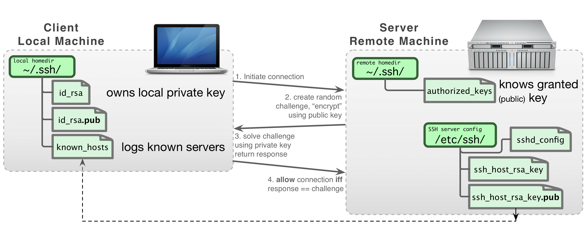
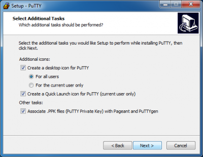
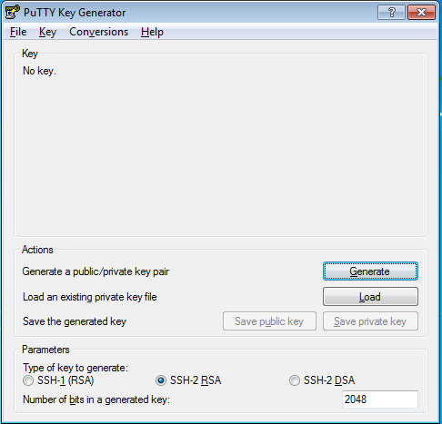
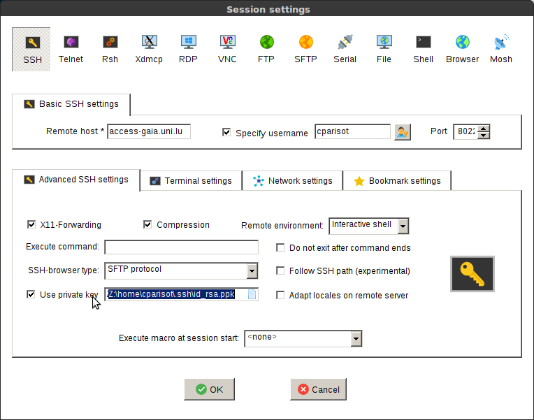
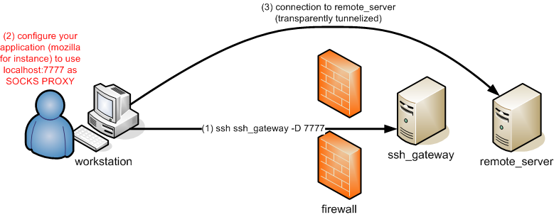

SSH¶
All ULHPC servers are reached using either the Secure Shell (SSH) communication and encryption protocol (version 2).
Developed by SSH Communications Security Ltd., Secure Shell is a an encrypted network protocol used to log into another computer over an unsecured network, to execute commands in a remote machine, and to move files from one machine to another in a secure way.
On UNIX/LINUX/BSD type systems, SSH is also the name of a suite of software applications for
connecting via the SSH protocol. The SSH applications can execute
commands on a remote machine and transfer files from one machine to
another. All communications are automatically and transparently
encrypted, including passwords. Most versions of SSH provide login
(ssh, slogin), a remote copy operation (scp), and many also provide a
secure ftp client (sftp). Additionally, SSH allows secure X Window
connections.
To use SSH, you have to generate a pair of keys, one public and the other private. The public key authentication is the most secure and flexible approach to ensure a multi-purpose transparent connection to a remote server. This approach is enforced on the ULHPC platforms and assumes that the public key is known by the system in order to perform an authentication based on a challenge/response protocol instead of the classical password-based protocol.
The way SSH handles the keys and the configuration files is illustrated in the following figure:

Installation¶
- OpenSSH is natively supported on Linux / Mac OS / Unix / WSL (see below)
- On Windows, you are thus encouraged to install Windows Subsystem for Linux (WSL) and setup an Ubuntu subsystem from Microsoft Store.
- You probably want to also install Windows Terminal and MobaXterm
- Better performances of your Linux subsystem can be obtained by migrating to WSL 2
- Follow the ULHPC Tutorial: Setup Pre-Requisites / Windows for detailed instructions.
SSH Key Generation¶
To generate an RSA SSH keys of 4096-bit length, just use the ssh-keygen command as follows:
ssh-keygen -t rsa -b 4096 -o -a 100
After the execution of this command, the generated keys are stored in the following files:
- SSH RSA Private key:
~/.ssh/id_rsa. NEVER EVER TRANSMIT THIS FILE - SSH RSA Public key:
~/.ssh/id_rsa.pub. This file is the ONLY one SAFE to distribute
To passphrase or not to passphrase
To ensure the security of your SSH key-pair on your laptop, you MUST protect your SSH keys with a passphrase! Note however that while possible, this passphrase is purely private and has a priori nothing to do with your University or your ULHPC credentials. Nevertheless, a strong passphrase follows the same recommendations as for strong passwords (for instance: see password requirements and guidelines.
Finally, just like encryption keys, passphrases need to be kept safe and protected from unauthorised access. A Password Manager can help you to store all your passwords safely. The University is currently not offering a university wide password manger but there are many free and paid ones you can use, for example: KeePassX, PWSafe, Dashlane, 1Password or LastPass.
You may want to generate also ED25519 Key Pairs (which is the most recommended public-key algorithm available today) -- see explaination
ssh-keygen -t ed25519 -o -a 100
Your key pairs will be located under ~/.ssh/ and follow the following format -- the .pub extension indicated the public key part and is the ONLY one SAFE to distribute:
$ ls -l ~/.ssh/id_*
-rw------- username groupname ~/.ssh/id_rsa
-rw-r--r-- username groupname ~/.ssh/id_rsa.pub # Public RSA key
-rw------- username groupname ~/.ssh/id_ed25519
-rw-r--r-- username groupname ~/.ssh/id_ed25519.pub # Public ED25519 key
Ensure the access rights are correct on the generated keys using the 'ls -l' command.
In particular, the private key should be readable only by you:
For more details, follow the ULHPC Tutorials: Preliminaries / SSH.
(deprecated - Windows only): SSH key management with MobaKeyGen tool
On Windows with MobaXterm, a tool exists and can be used to generate an SSH key pair. While not recommended (we encourage you to run WSL), here are the instructions to follow to generate these keys:
- Open the application Start > Program Files > MobaXterm.
- Change the default home directory for a persistent home directory instead of the default Temp directory. Go onto Settings > Configuration > General > Persistent home directory.
- choose a location for your home directory.
- your local SSH configuration will be located under
HOME/.ssh/
- your local SSH configuration will be located under
- choose a location for your home directory.
- Go onto Tools > Network > MobaKeyGen (SSH key generator).
- Choose RSA as the type of key to generate and change "Number of bits in a generated key" to 4096.
- Click on the Generate button. Move your mouse to generate some randomness.
- Select a strong passphrase in the Key passphrase field for your key.
- Save the public and private keys as respectively
id_rsa.pubandid_rsa.ppk.- Please keep a copy of the public key, you will have to add this public key into your account, using the IPA user portal (use the URL communicated to you by the UL HPC team in your "welcome" mail).

(deprecated - Windows only): SSH key management with PuTTY
While no longer recommended, you may still want to use Putty and the associated tools, more precisely:
- PuTTY, the free SSH client
- Pageant, an SSH authentication agent for PuTTY tools
- PuTTYgen, an RSA key generation utility
- PSCP, an SCP (file transfer) client, i.e. command-line secure file copy
- WinSCP, SCP/SFTP (file transfer) client with easy-to-use graphical interface
The different steps involved in the installation process are illustrated below (REMEMBER to tick the option "Associate .PPK files (PuTTY Private Key) with Pageant and PuTTYGen"):

Now you can use the PuTTYgen utility to generate an RSA key pair. The main steps for the generation of the keys are illustrated below (yet with 4096 bits instead of 2048):



- Save the public and private keys as respectively
id_rsa.pubandid_rsa.ppk.- Please keep a copy of the public key, you will have to add this public key into your account, using the IPA user portal (use the URL communicated to you by the UL HPC team in your "welcome" mail).
Password-less logins and transfers¶
Password based authentication is disabled on all ULHPC servers.
You can only use public-key authentication.
This assumes that you upload your public SSH keys *.pub to your user entry on the ULHPC Identity Management Portal.
Consult the associated documentation to discover how to do it.
Once done, you can connect by SSH to the ULHPC clusters. Note that the port on which the SSH servers are listening is not the default SSH one (i.e. 22) but 8022. Consequently, if you want to connect to the Iris cluster, open a terminal and run (substituting yourlogin with the login name you received from us):
# ADAPT 'yourlogin' accordingly
ssh -p 8022 yourlogin@access-iris.uni.lu
# ADAPT 'yourlogin' accordingly
ssh -p 8022 yourlogin@access-aion.uni.lu
Of course, we advise you to setup your SSH configuration to avoid typing this detailed command. This is explained in the next section.
SSH Configuration¶
On Linux / Mac OS / Unix / WSL, your SSH configuration is defined in ~/.ssh/config.
As recommended in the ULHPC Tutorials: Preliminaries / SSH, you probably want to create the following configuration to easiest further access and data transfers:
# ~/.ssh/config -- SSH Configuration
# Common options
Host *
Compression yes
ConnectTimeout 15
# ULHPC Clusters
Host iris-cluster
Hostname access-iris.uni.lu
Host aion-cluster
Hostname access-aion.uni.lu
# /!\ ADAPT 'yourlogin' accordingly
Host *-cluster
User yourlogin
Port 8022
ForwardAgent no
You should now be able to connect as follows
ssh iris-cluster
ssh aion-cluster
(Windows only) Remote session configuration with MobaXterm
This part of the documentation comes from MobaXterm documentation page MobaXterm allows you to launch remote sessions. You just have to click on the "Sessions" button to start a new session. Select SSH session on the second screen.


Enter the following parameters:
- Remote host:
access-iris.uni.lu(repeat withaccess-aion.uni.lu) - Check the Specify username box
- Username:
yourlogin- Adapt to match the one that was sent to you in the Welcome e-mail once your HPC account was created
- Port:
8022 - Go in Advanced SSH settings and check the Use private key box.
- Select your previously generated key
id_rsa.ppk.
- Select your previously generated key

You can now click on Connect and enjoy.
(deprecated - Windows only) - Remote session configuration with PuTTY
If you want to connect to one of the ULHPC cluster, open Putty and enter the following settings:
- In Category:Session :
- Host Name:
access-iris.uni.lu(oraccess-aion.uni.luif you want to access Aion) - Port:
8022 - Connection Type:
SSH(leave as default) - In Category:Connection:Data :
- Auto-login username:
yourlogin- Adapt to match the one that was sent to you in the Welcome e-mail once your HPC account was created
- In Category:SSH:Auth :
- Upload your private key:
Options controlling SSH authentication
Click on Open button. If this is the first time connecting to the server from this computer a Putty Security Alert will appear. Accept the connection by clicking Yes.
You should now be logged into the selected ULHPC login node.
Now you probably want want to save the configuration of this connection:
- Go onto the Session category.
- Enter the settings you want to save.
- Enter a name in the Saved session field (for example
Irisfor access to Iris cluster). - Click on the Save button.
Next time you want to connect to the cluster, click on Load button and Open to open a new connection.
SSH Agent¶
On your laptop¶
To be able to use your SSH key in a public-key authentication scheme, it must be loaded by an SSH agent.
-
Mac OS X (>= 10.5), this will be handled automatically; you will be asked to fill in the passphrase on the first connection.
-
Linux, this will be handled automatically; you will be asked to fill the passphrase on the first connection.
However if you get a message similar to the following:
(laptop)$> ssh -vv iris-cluster
[...]
Agent admitted failure to sign using the key.
Permission denied (publickey).
This means that you have to manually load your key in the SSH agent by running:
(laptop)$> ssh-add ~/.ssh/id_rsa
Enter passphrase for ~/.ssh/id_rsa: # <-- enter your passphrase here
Identity added: ~/.ssh/id_rsa (<login>@<hostname>)
(laptop)$> ssh-add ~/.ssh/id_ed25519
Enter passphrase for ~/.ssh/id_ed25519: # <-- enter your passphrase here
Identity added: ~/.ssh/id_ed25519 (<login>@<hostname>)
- On Ubuntu/WSL, if you experience issues when using
ssh-add, you should install thekeychainpackage and use it as follows (eventually add it to your~/.profile):
# Installation
(laptop)$> sudo apt install keychain
# Save your passphrase
/usr/bin/keychain --nogui ~/.ssh/id_ed25519 # (eventually) repeat with ~/.ssh/id_rsa
# Load the agent in your shell
source ~/.keychain/$(hostname)-sh
(Windows only) SSH Agent within MobaXterm
- Go in Settings > SSH Tab
- In SSH agents section, check Use internal SSH agent "MobAgent"

- Click on the
+button on the right - Select your private key file. If you have several keys, you can add them by doing steps above again.
- Click on "Show keys currently loaded in MobAgent". An advertisement window may appear asking if you want to run MobAgent. Click on "Yes".
- Check that your key(s) appears in the window.

- Close the window.
- Click on
OK. Restart MobaXterm.
(deprecated - Windows only) - SSH Agent with PuTTY Pageant
To be able to use your PuTTY key in a public-key authentication scheme, it must be loaded by an SSH agent. You should run Pageant for that. To load your SSH key in Pageant:
- Right-click on the pageant icon in the system tray,
- click on the
Add keymenu item - select the private key file you saved while running puttygen.exe i.e. ``
- click on the Open button: a new dialog will pop up and ask for your passphrase. Once your passphrase is entered, your key will be loaded in pageant, enabling you to connect with Putty.
- click on the
On ULHPC clusters¶
For security reason, SSH agent forwarding is prohibited and explicitly disabled (see ForwardAgent no configuration by default in the above configuration, you may need to manually load an agent once connected on the ULHPC facility, for instance if you are tired of typing the passphrase of a SSH key generated on the cluster to access a remote (private) service.
You need to proceed as follows:
$ eval "$(ssh-agent)" # export the SSH_AUTH_SOCK and SSH_AGENT_PID variables
$ ssh-add ~/.ssh/id_rsa
# [...]
Enter passphrase for [...]
Identity added: ~/.ssh/id_rsa (<login>@<hostname>)
You can then enjoy it. Be aware however that this exposes your private key. So you MUST properly kill your agent when you don't need it any mode, using
$ eval "$(ssh-agent -k)"
Agent pid <PID> killed
Key fingerprints¶
ULHPC may occasionally update the host keys on the major systems. Check here to confirm the current fingerprints.
With regards access-iris.uni.lu:
256 SHA256:tkhRD9IVo04NPw4OV/s2LSKEwe54LAEphm7yx8nq1pE /etc/ssh/ssh_host_ed25519_key.pub (ED25519)
2048 SHA256:WDWb2hh5uPU6RgaSotxzUe567F3scioJWy+9iftVmhI /etc/ssh/ssh_host_rsa_key.pub (RSA)
With regards access-aion.uni.lu:
256 SHA256:jwbW8pkfCzXrh1Xhf9n0UI+7hd/YGi4FlyOE92yxxe0 [access-aion.uni.lu]:8022 (ED25519)
3072 SHA256:L9n2gT6aV9KGy0Xdh1ks2DciE9wFz7MDRBPGWPFwFK4 [access-aion.uni.lu]:8022 (RSA)
Get SSH key fingerprint
The ssh fingerprints can be obtained via:
ssh-keygen -lf <(ssh-keyscan -t rsa,ed25519 $(hostname) 2>/dev/null)
Putty key fingerprint format
Depending on the ssh client you use to connect to ULHPC systems, you may see different key fingerprints. For example, Putty uses different format of fingerprints as follows:
access-iris.uni.lussh-ed25519 255 4096 07:6a:5f:11:df:d4:3f:d4:97:98:12:69:3a:63:70:2f
You may see the following warning when connecting to Cori with Putty, but it is safe to ingore.
PuTTY Security Alert
The server's host key is not cached in the registry. You have no guarantee that the server is the computer you think it is.
The server's ssh-ed25519 key fingerprint is:
ssh-ed25519 255 4096 07:6a:5f:11:df:d4:3f:d4:97:98:12:69:3a:63:70:2f
If you trust this host, hit Yes to add the key to PuTTY's cache and carry on connecting.
If you want to carry on connecting just once, without adding the key to the cache, hit No.
If you do not trust this host, hit Cancel to abandon the connection.
Host Keys¶
These are the entries in ~/.ssh/known_hosts.
The known host SSH entry for the Iris cluster should be as follows:
[access-iris.uni.lu]:8022 ssh-ed25519 AAAAC3NzaC1lZDI1NTE5AAAAIOP1eF8uJ37h5jFQQShn/NHRGD/d8KsMMUTHkoPRANLn
The known host SSH entry for the Aion cluster should be as follows:
[access-aion.uni.lu]:8022 ssh-ed25519 AAAAC3NzaC1lZDI1NTE5AAAAIFmcYJ7T6A1wOvIQaohgwVCrKLqIrzpQZAZrlEKx8Vsy
Troubleshooting¶
See the corresponding section.
Advanced SSH Tips and Tricks¶
CLI Completion¶
The bash-completion package eases the ssh command usage by providing completion for hostnames and more (assuming you set the directive HashKnownHost to no in your ~/etc/ssh_config)
SOCKS 5 Proxy plugin¶
Many Data Analytics framework involves a web interface (at the level of the master and/or the workers) you probably want to access in a relative transparent way.
For that, a convenient way is to rely on a SOCKS proxy, which is basically an SSH tunnel in which specific applications forward their traffic down the tunnel to the server, and then on the server end, the proxy forwards the traffic out to the general Internet. Unlike a VPN, a SOCKS proxy has to be configured on an app by app basis on the client machine, but can be set up without any specialty client agents. The general principle is depicted below.

Setting Up the Tunnel¶
To initiate such a SOCKS proxy using SSH (listening on localhost:1080 for instance), you simply need to use the -D 1080 command line option when connecting to a remote server:
ssh -D 1080 -C iris-cluster
ssh -D 1080 -C aion-cluster
-D: Tells SSH that we want a SOCKS tunnel on the specified port number (you can choose a number between 1025-65536)-C: Compresses the data before sending it
FoxyProxy [Firefox] Extension¶
Now that you have an SSH tunnel, it's time to configure your web browser (recommended: Firefox) to use that tunnel. In particular, install the Foxy Proxy extension for Firefox and configure it to use your SOCKS proxy:
- Right click on the fox icon, Select Options
- Add a new proxy button
- Name:
ULHPC proxy - Informations > Manual configuration
- Host IP:
127.0.0.1 - Port:
1080 - Check the Proxy SOCKS Option
- Host IP:
- Click on OK
- Close
- Open a new tab
- Click on the Fox
- Choose the ULHPC proxy
- disable it when you no longer need it.
You can now access any web interface deployed on any service reachable from the SSH jump host i.e. the ULHPC login node.
Using tsock¶
Once you setup a SSH SOCKS proxy, you can also use tsocks, a Shell wrapper to simplify the use of the tsocks(8) library to transparently allow an application (not aware of SOCKS) to transparently use a SOCKS proxy. For instance, assuming you create a VNC server on a given remote server as follows:
(remote_server)$> vncserver -geometry 1366x768
New 'X' desktop is remote_server:1
Starting applications specified in /home/username/.vnc/xstartup
Log file is /home/username/.vnc/remote_server:1.log
Then you can make the VNC client on your workstation use this tunnel to access the VNS server as follows:
(laptop)$> tsocks vncviewer <IP_of_remote_server>:1
tsock Escape character
Use ~. to disconnect, even if your remote command hangs.
SSH Port Forwarding¶
Forwarding a local port¶
You can forward a local port to a host behind a firewall.

This is useful if you run a server on one of the cluster nodes (let's say listening on port 2222) and you want to access it via the local port 1111 on your machine. Then you'll run:
# Here targeting iris cluster
(laptop)$ ssh iris-cluster -L 1111:iris-014:2222
Forwarding a remote port¶
You can forward a remote port back to a host protected by your firewall.

Tunnelling for others¶
By using the -g parameter, you allow connections from other hosts than localhost to use your SSH tunnels. Be warned that anybody within your network may access the tunnelized host this way, which may be a security issue.
Extras Tools around SSH¶
-
Assh - Advanced SSH config is a transparent wrapper that make
~/.ssh/configeasier to manage- support for templates, aliases, defaults, inheritance etc.
- gateways: transparent ssh connection chaining
-
more flexible command-line. Ex: Connect to
hostausinghostbas a gateway$ ssh hosta/hostb -
drastically simplify your SSH config
- Linux / Mac OS only
-
ClusterShell:
clush,nodeset(or cluset),- light, unified, robust command execution framework
- well-suited to ease daily administrative tasks of Linux clusters.
- using tools like
clushandnodeset
- using tools like
- efficient, parallel, scalable command execution engine \hfill{\tiny in Python}
- provides an unified node groups syntax and external group access
- see
nodesetand the NodeSet class
- see
-
DSH - Distributed / Dancer's Shell
- sshutle, "where transparent proxy meets VPN meets ssh"